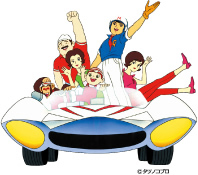
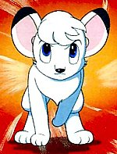

Surprisingly, modern anime rose in popularity at roughly the same time and would find major success in the 1960s with the release of Astro Boy by Osamu Tezuka (also known as Mighty Atom in Japan) in January of 1963. Thanks to an American named Fredd Ladd who saw a vision for how big Astro Boy could be, the series would be the first major anime hit in the United States with the English adaptation airing on NBC in September 1963. This was the first time a Japanese cartoon would be received with such interest and positivity, and this was partly because of how unique it was compared to American cartoons. Nothing like Astro Boy was aired on American television, but this would be the start of many years of anime in the U.S.
The success of Astro Boy in the U.S. would lead to more anime titles being localized and broadcasted in the United States. A year after Astro Boy's release, the anime adaptation of Mitsuteru Yokoyama's Gigantor (Tetsujin 28-go) was released. There was also Tobor (The Eighth Man), Marine Boy, and the well-known title Speed Racer. These weren't just run-of-the-mill adaptations trying to piggyback off of the success of Astro Boy either because each one of these shows was a hit, especially for younger audiences.
Fredd Ladd would also work on adapting Tezukas other work known as Kimba the White Lion. In the modern age, Kimba the White Lion is a bit of a controversial topic because of another series most Americans are aware of, The Lion King. It is believed that the idea for The Lion King was copied from Kimba (Kimba released before The Lion King). However, lawyers from Disney have denied that Kimba influenced the production of The Lion King. One thing is certain though, Anime was starting to impact American entertainment.
